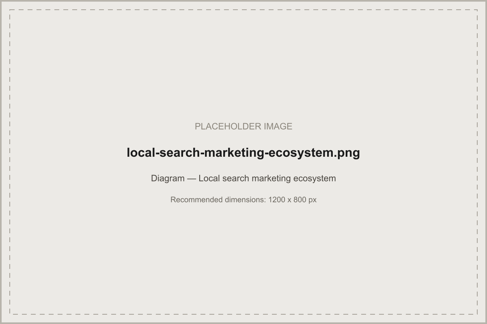

Local SEO is one channel in a bigger system. Here's how it fits with Google Business Profile, reviews, paid search, and follow-up to actually generate leads.
In short: a local search marketing strategy is the complete acquisition ecosystem — local SEO and Google Business Profile for organic visibility, reviews and reputation for trust, local paid campaigns for immediate demand, and a conversion-focused website with CRM and follow-up systems to turn all of that into actual leads. Local SEO strategy is one important channel inside this bigger picture, not the whole picture itself.
A local search marketing strategy is broader than a local SEO strategy. Local SEO covers organic and Google Maps visibility specifically. Local search marketing strategy covers the entire ecosystem a local customer moves through — from first search, through evaluating a business's reviews and website, to actually enquiring and becoming a customer, and staying one.
Think of this as four connected layers, each depending on the one before it actually working:
| Layer | Components | Role |
|---|---|---|
| Discovery | Local SEO, Google Business Profile, local paid campaigns | Get found for the right searches |
| Trust | Reviews and reputation, conversion-focused website | Convince a searcher this business is the right choice |
| Capture | Forms, call tracking, CRM integration | Turn interest into a tracked, actionable enquiry |
| Retention | Email and SMS follow-up, customer retention | Turn a first enquiry into a customer, and a customer into a repeat one |

| Channel | Speed to results | Ongoing cost pattern | Best for |
|---|---|---|---|
| Local SEO / Google Business Profile | Weeks to months | Ongoing effort, compounding value | Sustainable, long-term visibility |
| Local paid search | Immediate | Pay per click, scales with spend | Filling demand gaps while organic builds |
| Reviews and reputation | Ongoing, compounds over months | Low direct cost, mainly process | Conversion once a searcher is already comparing options |
| Conversion-focused website | Immediate once live | One-off plus maintenance | Turning existing traffic into more enquiries |
| Retargeting | Immediate | Pay per impression/click, scales with spend | Recovering visitors who didn't convert the first time |
A typical local customer journey runs: a location-intent search → a scan of the Local Pack and a few organic results → a check of reviews and the business's website → a call, form submission, or direction request → (ideally) a fast, human follow-up → a booked appointment or completed sale. Every stage in this chain is a potential drop-off point, and a strategy that only optimises the first stage (getting found) while ignoring the later ones (getting chosen, and getting followed up with fast) leaves real leads on the table.
| Stage | Priority channels | Why |
|---|---|---|
| New business, no visibility yet | Google Business Profile, local paid search | Fastest routes to initial visibility while organic SEO builds |
| Established, inconsistent lead flow | Local SEO, reviews, conversion-focused website | Builds a more durable, less pay-per-lead-dependent pipeline |
| Growing, multiple locations | Local SEO at scale, CRM and follow-up systems | Coordinating visibility and response across more locations without dropping leads |
| Mature, stable demand | Retention, retargeting, reputation depth | Protecting and compounding an existing customer base rather than only chasing new demand |
A UK tradesperson covering several towns might lean on Google Business Profile and local paid search early, since a strong review profile and organic content take longer to build — then shift weight toward organic local SEO and retention once demand is more consistent. A UK multi-location retailer, by contrast, might prioritise CRM and follow-up systems earlier, since the bigger risk at scale is enquiries arriving faster than they can be responded to, not a lack of visibility. Neither example is a specific case study or client result — both are illustrations of how channel priority shifts with business stage and structure, not a promise of a specific outcome for any business following the same order.
Rather than inventing fixed market prices, think in terms of proportional allocation: a business just establishing local visibility typically weights spend toward paid search and Google Business Profile setup; a business with an established base shifts more weight toward organic SEO, content, and retention, since these compound rather than requiring continuous spend to sustain results. Review this allocation quarterly against which channels are actually generating tracked, qualified enquiries — not just traffic or impressions.
A lead that isn't followed up quickly is often a lead lost to a faster-responding competitor. A workable framework: an immediate automated acknowledgment (confirmation email or SMS), a human follow-up within a defined, short window during business hours, and a structured nurture sequence for enquiries that aren't ready to book immediately. CRM integration ties this back to the original channel and campaign, so lead quality — not just lead volume — can be measured by source.
Report this on a consistent monthly cadence, alongside the local SEO-specific KPIs described in our local SEO campaign guide, so organic performance is always read in context of the full acquisition picture, not in isolation.
Local search marketing is the full set of channels a business uses to be found and chosen by nearby customers — local SEO, Google Business Profile, reviews and reputation, local paid campaigns, and the website experience that turns a search into an enquiry, working together rather than as isolated channels.
Local SEO strategy focuses primarily on organic and Google Maps visibility. Local search marketing strategy is broader — it includes local SEO as one channel alongside Google Ads, reviews, conversion-focused website design, CRM and follow-up systems, and retention, covering the complete acquisition ecosystem rather than just the organic piece.
Often yes, though the right mix depends on business stage and budget. Paid campaigns can generate leads immediately while organic local SEO builds over months, and running both against the same service areas reinforces the same geographic signals and provides useful data on which locations convert best.
Track enquiries and bookings by channel and location, not just traffic or rankings. Call tracking, form tracking, and lead attribution across organic, paid, and referral sources give a genuine picture of what's actually generating business, not just visibility.
Get a free audit covering SEO, Google Business Profile, and website conversion — not just one piece of the picture.
Request a Free Audit →
The organic piece of this wider ecosystem, in full.

Practical, prioritised recommendations you can act on now.

Executing the organic side of this strategy.

Connecting search performance back to revenue.
Written and reviewed by the Acendia International Editorial Team, part of Acendia International, an SEO agency working with businesses across the United Kingdom. See our editorial approach for how we research, write, and review our guides. Published 4 August 2026. Last updated 4 August 2026.
Book a free strategy call and see how SEO, GBP, reviews, and follow-up fit together for your business.